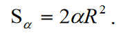

Łatwo zauważyć, że wierzchołki skonstruowanego trójkąta biegunowego są biegunami boków trójkąta ABC.
Narysujmy łuki wielkich kół przechodzące przez punkty B', A i B', C. Wtedy, jeśli wierzchołek A jest biegunem łuku B'C', to każdy punkt tego łuku jest oddalony od punktu A o 90°, a zatem łuk wielkiego koła AB1 będzie równy 90°, a kąt środkowy B1OA, oparty na będzie prosto. W ten sam sposób, argumentując podobnie, dochodzimy do wniosku, że kąt B'OC również będzie prosty.
Ale jeśli prosta B'O jest prostopadła do dwóch prostych poprowadzonych na płaszczyźnie A'OC', to będzie również prostopadła do dowolnej trzeciej linii poprowadzonej w tej płaszczyźnie przechodzącej przez jej podstawę, czyli łuk koła wielkiego łączący wierzchołek bieguna trójkąt B' z dowolnym punktem M leżącym na boku głównego trójkąta AC, będzie równy 90 °. Zatem wierzchołek B' trójkąta biegunowego jest biegunem boku AC głównego trójkąta.
Podobnie można udowodnić, że dwa pozostałe wierzchołki trójkąta biegunowego A' i C' są biegunami boków początkowego trójkąta BC i AB. Dlatego jeśli jeden trójkąt sferyczny jest biegunowy względem drugiego, to drugi będzie biegunowy względem pierwszego (trójkąty będą wzajemnie biegunowe).
TWIERDZENIE:
Boki i kąty dwóch trójkątów biegunowych względem siebie uzupełniają się parami do 180°.
Dowód:
Przyjmuje się, że trójkąty ABC i A'B'C' są biegunowe względem siebie ( rys ). Kąty i boki trójkąta głównego będziemy oznaczać przez A, B, C, a, b, c, natomiast elementy trójkąta biegunowego zbudowanego dla jego trójkąta biegunowego oznaczymy tymi samymi literami, tylko indeksami A', B', C', a', b', c'.
-
Udowodnijmy, że kąt głównego trójkąta sferycznego, np. B, dodany do boku trójkąta biegunowego b' daje w sumie 180°.
Przedłużmy łuki wielkich kół BA i BC na kuli, aż przetną się one z bokiem trójkąta biegunowego A'C' w punktach K i L.
Kąt sferyczny mierzy się łukiem wielkiego koła zawartym między jego bokami, względem którego wierzchołkiem kąta jest biegun, a więc kąt B mierzy się łukiem KL. Dlatego B + b' = KL + A'C'
Zastępując w tej równości A'C' do A'K + KL + LC', a następnie łącząc wyrazy w kolejności przez dwa, otrzymujemy:
B + b'= KL + А'К + KL+ LC' = A'L + KC'
Biorąc pod uwagę fakt, że punkt C' jest biegunem łuku BK, stwierdzamy, że KC' = 90°; z uwagi na to, że punkt A' jest biegunem łuku BL, mamy: A'L = 90°. Wtedy:
B + b' = 90° + 90° =180°.
Dokładnie w ten sam sposób zostało to udowodnione
А + а' = 180°, С + c' = 180°,
Zatem suma kąta danego trójkąta sferycznego i odpowiadającego mu boku trójkąta biegunowego wynosi 180°:
А + а' = 180°, B + b' = 180°, С + c' = 180°,
-
Łatwo jest udowodnić, że suma kątów trójkąta biegunowego i odpowiedniego boku trójkąta głównego wynosi 180°. Udowodnijmy na przykład, że
B' + b = 180°.
Kąt B' jest mierzony łukiem NS. Dlatego B' + b = NS + AC; ale zamiast NS możesz umieścić sumę NC + CS, a zamiast AC różnicę AS - CS (rys ). Wtedy będziemy mieli:
В' + b = NC + CS + AS - CS = NC + AS = 90°+90° = 180°.
Zauważ, że to, co zostało udowodnione, jest również oczywiste ze względu na wzajemną biegunowość trójkątów.
-
Jeśli każdy bok jednego trójkąta jest mniejszy niż 90°, to skonstruowany dla niego trójkąt biegunowy będzie znajdował się poza tym trójkątem, jak widać na (rys ). Jeżeli któryś z boków jednego trójkąta jest większy niż 90°, a inny mniejszy niż 90°, to jego trójkąt biegunowy przetnie boki danego trójkąta; wreszcie, jeśli każdy z boków danego trójkąta jest większy niż 90°, to jego trójkąt biegunowy będzie się w nim znajdował.
Własności trójkąta biegunowego wykorzystamy w przyszłości przy wyprowadzaniu różnych wzorów trygonometrii sferycznej.
§ 2.3 Związek między bokami i kątami trójkąta sferycznego
Ze stereometrii wiadomo, że każdy kąt płaski kąta trójściennego O jest mniejszy niż suma i większy niż różnica dwóch innych kątów płaskich.Te kąty płaskie są mierzone przez boki trójkąta sferycznego, na którym spoczywają, a dwuścienny kąty są mierzone przez odpowiednie kąty trójkąta sferycznego. Pozwala to na ustalenie następujących zależności między bokami i kątami trójkąta sferycznego.
Ponieważ ∠AOC<∠AOB + ∠BOC i ∠AOC = b, ∠AOB = c, ∠BOC = a , to następuje: a+c>b
Dlatego każdy bok trójkąta sferycznego jest mniejszy niż suma dwóch pozostałych boków i możemy zapisać system nierówności:

Na podstawie wzorów drugiego wiersza wynika, że każdy bok trójkąta sferycznego jest większy niż różnica dwóch pozostałych.
Dodając c do obu części pierwszej nierówności i dzieląc obie części wynikowej nierówności przez dwa, otrzymujemy
Dlatego półokres p trójkąta sferycznego jest zawsze większy niż którykolwiek z boków.
Z geometrii bryłowej wiadomo, że w dowolnym kącie trójściennym suma jego kątów płaskich nie przekracza 360°
Suma boków trójkąta sferycznego jest zawsze mniejsza niż 360° .
-
Rozważmy dwa wzajemnie biegunowe trójkąty sferyczne ACB A'B'C'.Następnie zgodnie z (2) dla boków trójkąta A'B'C' możemy zapisać:
i < a' < b' < c' < 360°
W paragrafie 2.2 uzyskano wzory łączące boki i kąty trójkątów biegunowych
а' = 180° - A, b' = 180° - B, c' = 180° - C,
Podstawiając w nieruwność otrzymujemy:
180° < A + B + C < 540°
Nadmiar sumy kątów trójkąta sferycznego powyżej 180° nazywa się jego
kurtozą
lubsferycznym nadmiarem i jest oznaczany
ε = А + В + С - 180°
-
Rozważmy dwa wzajemnie biegunowe trójkąty sferyczne ACB i A'B'C'.Następnie zgodnie z (1) dla boków trójkąta A'B'C' możemy zapisać:
a' + b' > c'
Wtedy na podstawie (4) otrzymamy 360° - A + B > 180° - C, skąd
A + B- C < 180°
-
Kąt zewnętrzny trójkąta sferycznego jest mniejszy niż suma dwóch kątów wewnętrznych nie sąsiadujących z nim, ale większy niż ich różnica.
Dowód.
Kontynuujemy jeden z boków trójkąta sferycznego ABC, na przykład , i tworzymy kąt zewnętrzny D. z ryc. widać, że D + C \u003d 180 °. Skoro A + B + C> 180°, to A + B + C> D + C. Stąd otrzymujemy A+B>D. Aby udowodnić drugą część twierdzenia, użyjemy nierówności A + C - B < 180°= D + C, skąd A - B < D.
-
Kąty przy podstawie równoramiennego trójkąta sferycznego są sobie równe.
Dowód.
Niech ABC będzie równoramiennym trójkątem sferycznym, w którym dwa jego boki są sobie równe b=c: Załóżmy, że b < 90°. Narysujmy promienie kuli CO, BO i AO do wierzchołków A, B i C oraz skonstruujmy styczne SB i SC do równych boków b i c w wierzchołkach B i C. Styczne te przecinają kontynuację promienia OA w tym samym punkcie, a ich długości będą równe: BS=CS. Poprowadźmy styczne BT i CT do boku a przez wierzchołki B i C i połączmy punkt ich przecięcia T z punktem S odcinkiem TS
W płaskich trójkątach STV i STC bok TS jest ich wspólnym bokiem, a pozostałe dwa boki są sobie równe parami, czyli BS=CS i BT=CT. Oczywiście te trójkąty są sobie równe. Oznacza to, że ∠SBT= ∠SCT. Ale ponieważ te kąty mierzą kąty sferyczne na wierzchołkach B i C trójkąta sferycznego, wnioskujemy z tego, że B = C.
-
Z udowodnionego twierdzenia wynika, że w trójkącie sferycznym równe kąty leżą na równych bokach, to znaczy, jeśli b = c, to B = C.
-
Przeciwne równe kąty w trójkącie sferycznym mają równe boki.
-
W trójkącie sferycznym większy bok leży naprzeciwko większego kąta.
-
W trójkącie sferycznym większy kąt leży naprzeciw większego boku.
-
Jeżeli suma dwóch boków trójkąta sferycznego spełnia jeden z warunków α+b < 180°, α+b= 180°, α+b > 180° to suma ich przeciwległych kątów również spełnia odpowiedni warunek A + B < 180°, A + B = 180° lub A + B > 180°.
I odwrotnie, jeśli suma dwóch kątów trójkąta sferycznego jest większa, równa lub mniejsza niż 180°, to suma ich przeciwległych boków musi być odpowiednio większa, równa lub mniejsza niż 180°.
-
Jeśli różnica dwóch boków trójkąta sferycznego jest większa, równa lub mniejsza niż 0, to różnica dwóch przeciwległych kątów jest większa, równa lub mniejsza od zera.
-
Jeśli różnica dwóch kątów trójkąta sferycznego jest większa, równa lub mniejsza niż 0, to różnica dwóch przeciwległych boków jest większa, równa lub mniejsza od zera.
§ 2.4 Równość i symetria trójkątów sferycznych.
Sferyczne trójkąty leżące na tej samej kuli są sobie równe, jeśli nakładają się na siebie. Stanie się tak, gdy podane równe części trójkątów sferycznych ułożą się w nich w ten sam sposób i zostanie spełniony co najmniej jeden z poniższych warunków:
- trójkąty sferyczne mają dwa odpowiednio równe boki i równy kąt zawarty między tymi bokami;
- trójkąty sferyczne mają równy bok i dwa odpowiednio równe kąty przylegające do tego boku;
- trójkąty sferyczne mają trzy odpowiednio równe boki;
- trójkąty sferyczne mają trzy odpowiednio równe kąty.
Wprowadźmy jeszcze jedno ważne pojęcie. Dwa trójkąty sferyczne ABC i A1B1C mogą mieć odpowiednio równe elementy: A=A1 , B=B1 , C=C1 , a=a1 , b=b1 , c=c1 , ale , leżeć na kuli w inna kolejność: numeracja wierzchołków w trójkącie ABC przebiega zgodnie z ruchem wskazówek zegara, aw trójkącie A1B1C1 przeciwnie do ruchu wskazówek zegara.
Przy takim układzie elementów trójkąt sferyczny A1B1C1 nie może być nałożony na trójkąt sferyczny ABC ani w wyniku jego ruchu po kuli gdy wierzchołki C1 i C pokrywają się z bokami c1 i c, wierzchołek A1 musi być połączony z B, a wierzchołek B1 z A, ale A1 # B, B1 = A, ani w wyniku jego obrotu wokół boku A1B1 (AB), ponieważ w tym przypadku boki a, b i c nie będą się pokrywać z odpowiednimi bokami a1, b1 i c1, których wybrzuszenia będą parami przeciwne; połączenie powierzchni sferycznych trójkątów A1B1C1 i ABC.
Aby połączyć odpowiednie boki i powierzchnie sferycznych trójkątów A1B1C1 i ABC, będą one również musiały się zgiąć. Ale wygięcie powierzchni sferycznego trójkąta jest równoznaczne z przesunięciem środka kuli. Trójkąty sferyczne o równej powierzchni, ale nienakładające się na siebie, nazywane są symetrycznymi trójkątami sferycznymi .
Symetryczne sferyczne trójkąty równoramienne można nałożyć na kulę.
§ 2.5 Pole trójkąta sferycznego.
W sekcji 1.5 otrzymuje się wzór do obliczania powierzchni kulistego dwukąta:

gdzie kąt α jest podany w radianach
TWIERDZENIE:
Pole sferycznego trójkąta na kuli o promieniu R jest równe iloczynowi kwadratu promienia i sferycznego nadmiaru,
Dowód: Sferyczny trójkąt jest uzupełniony dowolnym trójkątem przylegającym do sferycznego digonu. Kąty otrzymanych dwukątów są równe kątom głównego trójkąta.
Dodajmy równości i otrzymajmy
Ponieważ trójkąty AB1C i A1BC są równe, to ich pola też są równe. Wtedy suma pól trójkątów w nawiasach po lewej stronie równości będzie równa polu powierzchni półkuli, czyli 2 πR^2. W ten sposób otrzymujemy
A ponieważ sferyczny nadmiar jest równy
ε = А + В + С - π
, wtedy otrzymujemy wzór na obliczenie pola trójkąta sferycznego
Przykład.
Kąty trójkąta sferycznego leżącego na kuli o promieniu 10 m wynoszą: A = 87°45′4”, B=120°23′5”, C = 98°53′7”. Oblicz pole trójkąta.
Analogicznie B = 120,3847°; C = 98,88528°
Sferyczny nadmiar jest równy ε = А + В + С - π = 127,0211° lub w radianach 2,216937rad. Wtedy S = 100*2,216937 = 221,7 m^2
§ 2.6 Pytania i ćwiczenia
Jakie trójkąty nazywamy kulistymi/sferycznymi?
Jakie trójkąty sferyczne nazywane są biegunowymi?
W jaki sposób powiązane są boki i kąty dwóch trójkątów biegunowych?
Czy suma boków trójkąta sferycznego może przekroczyć 360° ?
Czy suma kątów trójkąta sferycznego będzie równa 180° ?
Jakie są zależności między kątami trójkąta sferycznego?
zy można mieć trójkąt sferyczny z bokiem
b=32°
, a kąt B przekracza 100° ?
Jak oblicza się nadmiar kulisty?
Wymień przyznaki równości trójkątów sferycznych.
Jak oblicza się pole trójkąta sferycznego?
Jaka jest różnica między pojęciami: równy i symetryczny
sferyczne trójkąty?